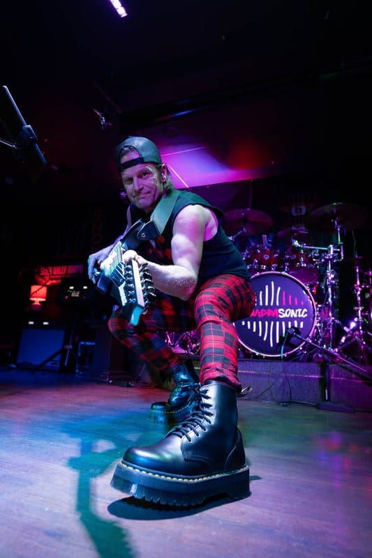
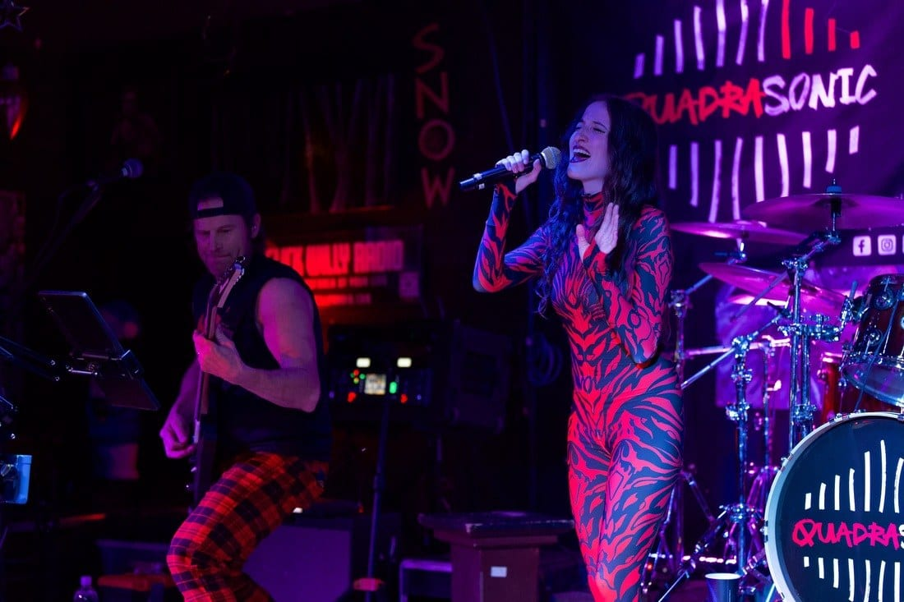
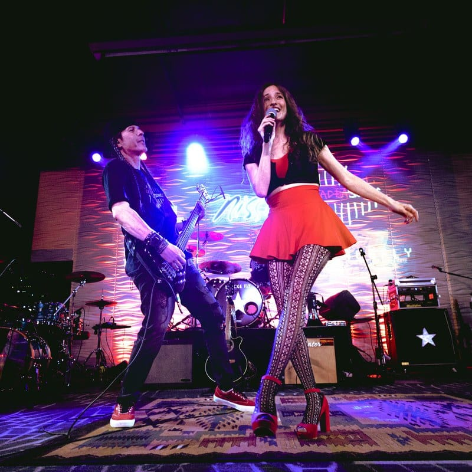
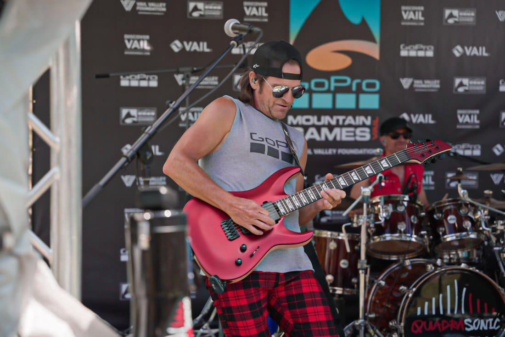
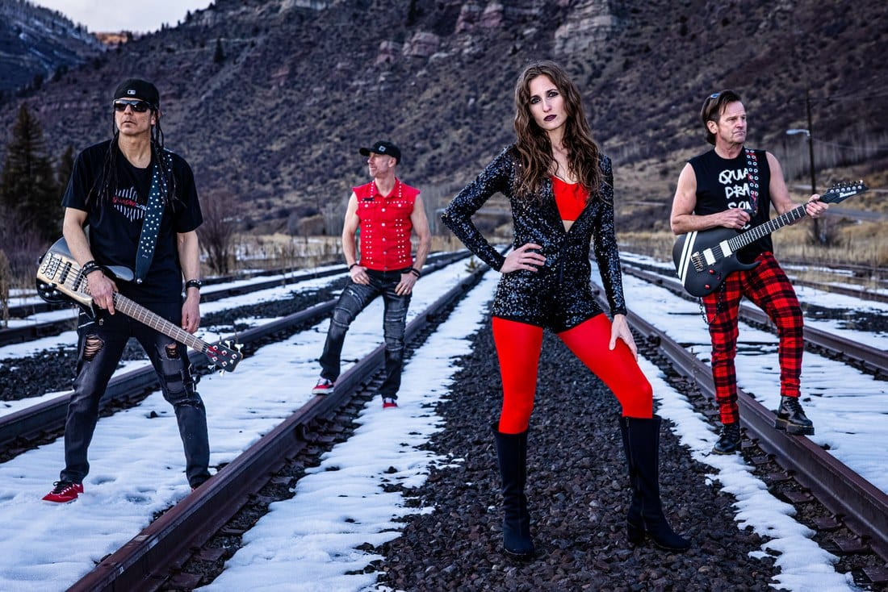
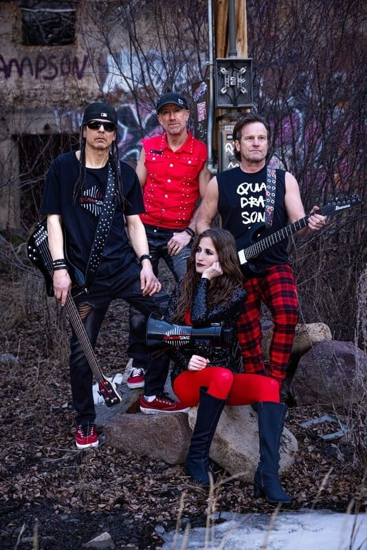

Alternative rock covers
Quadrasonic
A four-piece rock band from the Vail Valley.
You know what happens when the opening riff of Zombie or Mr. Brightside comes on at a wedding. Quadrasonic is a hard-hitting rock band with a powerhouse singer out front, playing the songs your guests grew up on, from Pat Benatar and Blondie to No Doubt, Nirvana and Paramore. This is the band to book when you want a rock show and a dance floor at the same time.
Awards and press
In the press and on air

Press · Vail Daily · 2025
Press · Vail Daily · 2022
Stages and credits
- Michelle played six shows in one season at the Gerald R. Ford Amphitheater in Vail, and the Vilar Performing Arts Center (2022)
- Special guest for Teenage Wasteland, the national touring show of The Who's music (2025)
- Copper Mountain's summer concert series (2025)
- Glenwood Pride, Fat Tire Fest, Sunset Live, Rock Island Oyster Bar in Glenwood Springs, the Shakedown Bar in Vail and Route 6 Café
- Michelle's album Ascend, with Coleen Dieker
- Michelle is the cantor at B'nai Vail and leads its Friday Shabbat services
Trusted and booked by
Quadrasonic plays rock from the ’70s to today, and a lot of their song list comes from ’90s alternative radio. You’ll hear Heart and Joan Jett next to Hole, Veruca Salt and Garbage, and newer songs from Paramore and Chappell Roan, too. They also play a few pop hits, like Toxic and Levitating, with the guitars turned up.
Their singer can go from a grunge growl to soaring high notes, and she’s been on stage her whole life, so she brings a little theater to every show. She plays hundreds of shows a year around Colorado.
The band is based in the Vail Valley, and they play weddings, festivals, summer concert series and clubs across Colorado, including the GoPro Mountain Games in Vail.
Configurations
| Size | What it suits |
|---|---|
| Four-piece bandLead vocals, electric guitar, bass and drums | This is the full band, and it’s the size to book when you want people dancing at a wedding reception, a big birthday or a company party. |
Send us your date and we’ll let you know what Quadrasonic would need at your venue.
Occasions
Perfect booking for
- Mountain wedding receptions
- If you’re getting married in Vail or Beaver Creek, a band that already lives in the valley is a great fit for your reception. They’re a great choice when you and your friends grew up on No Doubt and Nirvana.
- Birthdays and big parties
- For a 40th or a 50th where everyone grew up on ’90s radio, Quadrasonic is a lot of fun.
- Company parties and after-parties
- After a conference or a holiday dinner, a loud, fun rock band is an easy way to get a whole company on the dance floor.
- Retreats in Vail
- If your team is meeting in Vail, a band from the valley is an easy choice for your closing party.
Planning toasts or a program? We can work the music around them with your run of show. You can also get a general idea of what live music costs in Colorado from our cost guide.
Song list
A sample of their songs.
This is a sample of the songs they play, and we’ll put the setlist together with you.


- Hit Me With Your Best ShotPat Benatar
- Mother MotherTracy Bonham
- Call MeBlondie
- Sweet Dreams (Are Made of This)Eurythmics
- Seven Nation ArmyThe White Stripes
- I Believe in a Thing Called LoveThe Darkness
- FlowersMiley Cyrus
- CannonballThe Breeders
- Bad ReputationJoan Jett
- Blitzkrieg BopRamones
- Under the BridgeRed Hot Chili Peppers
- Celebrity SkinHole
- HeartbreakerPat Benatar
- Smells Like Teen SpiritNirvana
- SpiderwebsNo Doubt
- Still Into YouParamore
- Just a GirlNo Doubt
- Volcano GirlsVeruca Salt
- Only Happy When It RainsGarbage
- ZombieThe Cranberries
- Are You Gonna Be My GirlJet
- What’s Up4 Non Blondes
- Pink Pony ClubChappell Roan
- Misery BusinessParamore
- The MiddleJimmy Eat World
- Mr. BrightsideThe Killers
- Bad RomanceHalestorm
- You Oughta KnowAlanis Morissette
- Ex’s & Oh’sElle King
- CreepRadiohead
- RoamThe B-52’s
- Bring Me to LifeEvanescence
- Piece of My HeartBig Brother & the Holding Company
- Brain StewGreen Day
- BarracudaHeart
- ToxicBritney Spears
- LevitatingDua Lipa
Video Clips
Watch Quadrasonic play rock covers










Venues
We’d pick Quadrasonic for live music at these venues.

Aurora, by Denver International Airport
Gaylord Rockies Resort & Convention Center
Four ballrooms, the Mountain View Pavilion and its lawns, the Grand Lodge and the Front Range Lawn.
Acts we'd pickTejas Singh · Little Moses Jones · Quadrasonic
Live music at Gaylord Rockies
Downtown Denver
Grand Hyatt Denver
The Pinnacle Club on the 38th floor, the Colorado Ballroom and the Aspen Ballroom.
Acts we'd pickJazz Duo · Little Moses Jones · Quadrasonic
Live music at Grand Hyatt Denver
Downtown Denver
Hilton Denver City Center
The Colorado, Denver and Penrose ballrooms and an outdoor plaza.
Acts we'd pickLittle Moses Jones · Soul and R&B Band · Jazz Duo
Live music at Hilton Denver City Center
Westminster, between Denver and Boulder
The Westin Westminster
The Westminster, Legacy and Standley ballrooms, the Waterfall Gardens, the Lake House and the Sunset Rooftop Deck.
Acts we'd pickClassical Strings · Little Moses Jones · Quadrasonic
Live music at the Westin Westminster
Quadrasonic questions
Still have a question? Our full question list may have the answer.
Is Quadrasonic too loud for a wedding?
Can we request a song?
Do they play outside the Vail Valley?
Looking for a rock band in Vail or Denver?
Send us your date and we’ll let you know if Quadrasonic is available and what it would cost.
Want photos or video of your event? Add them to your booking.